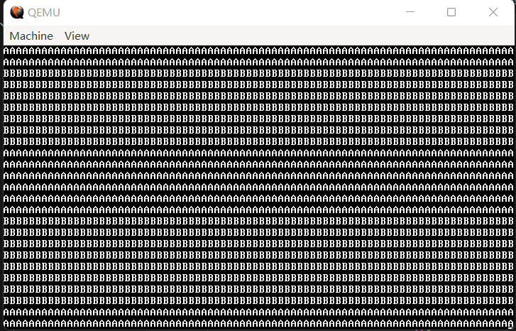

12 多任务
注：与上一篇类似，本节同样有参考《30天自制操作系统》，但不像上一节一样没有原创的东西（kmalloc 和 kfree 的代码在29.3节中有）。
多任务，顾名思义，就是多个任务同时进行。在计算机中，这是一个非常重要的概念，否则这篇教程甚至写不出来（我需要一边打字一边写代码，显然需要两个一块开）。当然在现实生活中，不推荐使用多任务。
理论上讲，只有一个 CPU 的时候，是没有办法多个任务“同时”进行的——因为一次只能有一段代码在 CPU 上跑。但正像O(1)不是立即完成，而是“常量时间”，多任务也不是同时进行，而是“交替进行”，只是这种交替间隔时间极短。
在 intel x86 cpu 中，任务切换的核心是任务状态段（TSS），这一部分完全是 intel 硬件提供的。由于 TSS 是一个段，在实际使用时，需要把这个段注册到 GDT 中。
由于效率较低，在 Linux 等更为现代的操作系统中已经废弃了这种方法，但初学而言，还是用原生自带的比较好。
TSS 总共有 16 位、32 位和 64 位三种版本，我们来看看 32 位版的 TSS 长什么样：
代码 12-1 TSS32（include/mtask.h）
#ifndef _MTASK_H_
#define _MTASK_H_
#include "common.h"
typedef struct TSS32 {
uint32_t backlink, esp0, ss0, esp1, ss1, esp2, ss2, cr3;
uint32_t eip, eflags, eax, ecx, edx, ebx, esp, ebp, esi, edi;
uint32_t es, cs, ss, ds, fs, gs;
uint32_t ldtr, iomap;
} tss32_t;
#endif
TSS32 结构体的第二、三行，是任务切换中会随时更改的寄存器。任务切换发生时，会把当时寄存器的值存入 TSS。
第一、四行与任务切换相关，暂且按下不表。ldtr 这个名字，联想 gdtr 和 idtr，相信各位读者能够推测出它表示什么，第20节我们再回来重翻旧案。
由于 TSS32 的结构与硬件强相关，显然我们不能用它来代表一个任务，不然想给任务加点什么额外的属性，硬件就要有意见了。所以我们在外面套一层封装，构成 TASK 结构体：
代码 12-2 表示任务的结构体（include/mtask.h）
typedef struct TASK {
uint32_t sel;
int32_t flags;
tss32_t tss;
} task_t;
目前，它只有两个属性：sel 和 flags。sel 代表它对应的 TSS 的选择子，flags 代表它的标志，如是否使用过、是否在运行等。
接下来，我们来实现一个控制任务的结构体。由于注册的任务和实际的任务可能不一致，这需要两个 task_t 数组，由于较为复杂，打包为一个结构体：
代码 12-3 任务控制结构体（include/mtask.h）
#define MAX_TASKS 1000
#define TASK_GDT0 3
typedef struct TASKCTL {
int running, now;
task_t *tasks[MAX_TASKS];
task_t tasks0[MAX_TASKS];
} taskctl_t;
running 和 now 代表正在运行的任务数量和当前运行的任务编号，tasks 是实际运行任务的数组，tasks0 是任务注册时进入的数组。这样一来，我们只需要一个 taskctl_t，就可以引用到所有这些控制任务的变量了。
TASK_GDT0 表示从第多少号 GDT 开始分配给 TSS 使用。
任务控制的声明部分暂告一段落，接下来是实际的控制代码。系好安全带，我们开始吧。
首先，是初始化多任务环境的函数 task_init。首先它会初始化 taskctl，在执行完后，当前执行流将被当成一个任务来对待，这样做的目的是方便管理。
代码 12-4 初始化多任务环境（kernel/mtask.c）
#include "mtask.h"
#include "gdtidt.h"
#include "memory.h"
#include "isr.h"
extern void load_tr(int);
extern void farjmp(int, int);
taskctl_t *taskctl;
task_t *task_init()
{
task_t *task;
taskctl = (taskctl_t *) kmalloc(sizeof(taskctl_t));
for (int i = 0; i < MAX_TASKS; i++) {
taskctl->tasks0[i].flags = 0;
taskctl->tasks0[i].sel = (TASK_GDT0 + i) * 8;
gdt_set_gate(TASK_GDT0 + i, (int) &taskctl->tasks0[i].tss, 103, 0x89); // 硬性规定，0x89 代表 TSS，103 是因为 TSS 共 26 个 uint32_t 组成，总计 104 字节，因规程减1变为103
}
task = task_alloc();
task->flags = 2;
taskctl->running = 1;
taskctl->now = 0;
taskctl->tasks[0] = task;
load_tr(task->sel); // 向CPU报告当前task->sel对应的任务为正在运行的任务
return task;
}
这之中最难懂的大概就是倒数第三行的 load_tr 了吧。调用 task_init 的应该是 kernel_main，而 kernel_main 此时还没有任务形态，需要用 load_tr 来使得 CPU 认识到这是正在运行的任务。
代码 12-5 load_tr（lib/nasmfunc.asm）
[global load_tr]
load_tr:
ltr [esp + 4]
ret
在这之中，用到了 task_alloc，它是分配一个任务用的函数。先从 tasks0 中找到空项，然后进行一些初始化工作，最后返回一个崭新的任务。
代码 12-6 分配任务用 task_alloc（kernel/mtask.c）
task_t *task_alloc()
{
task_t *task;
for (int i = 0; i < MAX_TASKS; i++) {
if (taskctl->tasks0[i].flags == 0) {
task = &taskctl->tasks0[i];
task->flags = 1;
task->tss.eflags = 0x00000202;
task->tss.eax = task->tss.ecx = task->tss.edx = task->tss.ebx = 0;
task->tss.ebp = task->tss.esi = task->tss.edi = 0;
task->tss.es = task->tss.ds = task->tss.fs = task->tss.gs = 0;
task->tss.ldtr = 0;
task->tss.iomap = 0x40000000;
return task;
}
}
return NULL;
}
接下来是 task_run，使一个任务开始运行。实际上只是把这个任务加入了 tasks 数组而已。
代码 12-7 运行任务用 task_run（kernel/mtask.c）
void task_run(task_t *task)
{
task->flags = 2;
taskctl->tasks[taskctl->running] = task;
taskctl->running++;
}
接下来是 task_switch，真正执行任务切换的部分。不过，我们好像还没有具体讲究竟是怎么任务切换的，我们现在来简单说一下。
其实非常简单，只需要用 farjmp 就可以了。当执行一个远跳转时，CPU 会检查对应的段是否是代码段，如果不是，就退而求其次检查是不是 TSS。如果是 TSS，就会自动读取 TSS 中的全部寄存器，这之中包括下一步执行哪里的 eip，从而恢复断点，继续执行。
代码 12-8 farjmp（lib/nasmfunc.asm）
[global farjmp]
farjmp:
jmp far [esp + 4]
ret
在实际运用中，应在 C 中如此调用：farjmp(eip, cs)。eip 为下一步执行哪里的寄存器，如果跳的是 TSS，那就必须写 0；cs 为跳入的代码段，在这里是 TSS。
这样一来，task_switch 就十分简单了。
代码 12-9 任务切换（kernel/mtask.c）
void task_switch()
{
if (taskctl->running >= 2) { // 显然，至少得有两个任务才能切换
taskctl->now++; // 下一个任务
if (taskctl->now == taskctl->running) { // 到结尾了
taskctl->now = 0; // 转换为第一个
}
farjmp(0, taskctl->tasks[taskctl->now]->sel); // 跳入任务对应的 TSS
}
}
结合注释应该不难理解……我是第几次说这句话了？
最后是 task_now，返回当前任务，后续会频繁用到。
代码 12-10 返回当前任务（kernel/mtask.c）
task_t *task_now()
{
return taskctl->tasks[taskctl->now];
}
至此，我们已经基本完成了一个可用的任务处理框架。但是还有最后一个问题：谁来控制任务切换的进行呢？
还记得前面说的话吗？任务需要“交替运行”，也就是说，任务切换需要一段时间发生一次。我们发现，时钟中断刚好可以胜任！
因此，进入 timer.c，删除 tick 变量和所有对 tick 变量的操作，修改 timer_callback 如下：
代码 12-11 新版时钟中断回调（kernel/timer.c）
#include "mtask.h"
static void timer_callback(registers_t *regs)
{
task_switch(); // 每出现一次时钟中断，切换一次任务
}
首先，进入到 main.c，添加一个创建内核任务的函数。由于代码量大且（将会）频繁用到，做一个小小的封装。
代码 12-12 创建内核任务（kernel/main.c）
#include "mtask.h"
task_t *create_kernel_task(void *entry)
{
task_t *new_task;
new_task = task_alloc();
new_task->tss.esp = (uint32_t) kmalloc(64 * 1024) + 64 * 1024 - 4;
new_task->tss.eip = (int) entry;
new_task->tss.es = new_task->tss.ss = new_task->tss.ds = new_task->tss.fs = new_task->tss.gs = 2 * 8;
new_task->tss.cs = 1 * 8;
return new_task;
}
然后是新任务的主体 task_b_main，目前它还没啥大作用。
代码 12-13 新任务主体 task_b_main（kernel/main.c）
void task_b_main()
{
while (1) monitor_put('B'); // 重复打印B
}
最后是新版 kernel_main：
代码 12-14 最新内核主函数（kernel/main.c）
void kernel_main() // kernel.asm会跳转到这里
{
monitor_clear(); // 先清屏
init_gdtidt();
init_memory();
init_timer(100);
asm("sti");
task_t *task_a = task_init();
task_t *task_b = create_kernel_task(task_b_main);
task_run(task_b);
// 此时kernel_main已经成为task_a的一部分
while (1) monitor_put('A');
}
首先我们将时钟中断发生频率改为每0.1s发生一次，然后是创建、运行任务的代码，应该不难理解。
在 include/gdtidt.h 中加入一行声明：
代码 12-15 声明（include/gdtidt.h）
void gdt_set_gate(int32_t num, uint32_t base, uint32_t limit, uint16_t ar);
mtask.h 也要加入声明，全文如下：
代码 12-16 include/mtask.h
#ifndef _MTASK_H_
#define _MTASK_H_
#include "common.h"
typedef struct TSS32 {
uint32_t backlink, esp0, ss0, esp1, ss1, esp2, ss2, cr3;
uint32_t eip, eflags, eax, ecx, edx, ebx, esp, ebp, esi, edi;
uint32_t es, cs, ss, ds, fs, gs;
uint32_t ldtr, iomap;
} tss32_t;
typedef struct TASK {
uint32_t sel;
int32_t flags;
tss32_t tss;
} task_t;
#define MAX_TASKS 1000
#define TASK_GDT0 3
typedef struct TASKCTL {
int running, now;
task_t *tasks[MAX_TASKS];
task_t tasks0[MAX_TASKS];
} taskctl_t;
task_t *task_init();
task_t *task_alloc();
void task_run(task_t *task);
void task_switch();
task_t *task_now();
#endif
在所有声明添加完成后，编译运行，效果如图所示： 
（图 12-1 运行成功）
我们看到了交错的 A 和 B，这是个好现象。那么我们的多任务到此结束……
……那是不可能的。我们还有一些内容没有完成。我们还要实现 Linux 中 exit 和 waitpid 的功能。这一部分地基打好了，我们后面的应用程序才能更好地运行起来。
那么，我们再次开始。首先，exit 是有返回值的，我们需要在某一个地方存一下返回值。思来想去，最合适的地方还是在 TASK 结构体中，在 mtask.h 中添加这样一个定义：
代码 12-17 新声明（include/mtask.h）
typedef struct exit_retval {
int pid, val;
} exit_retval_t;
typedef struct TASK {
uint32_t sel;
int32_t flags;
exit_retval_t my_retval;
tss32_t tss;
} task_t;
删去原本的 TASK 定义，替换为上面这一段。由于 exit 的返回值可以是任何一个东西，因此特意添加了一个 pid 变量，用来确认是否退出。当然这个变量可以换成随便一个东西，这里用 pid 只是一种用法。
那么，一个任务的 pid 是什么呢？pid 自然是一个 id，是一个任务的另一个身份证。一般而言，它是一个单独的数，表示它在一个任务数组或者什么地方的索引。
在这里，由于我们的全局数组是 taskctl->tasks0，因此，一个任务的 pid 就是它在 tasks0 中的索引。看起来从一个任务找 pid 是一个 O(n) 的操作，但是注意 task_init 中的这行代码：
taskctl->tasks0[i].sel = (TASK_GDT0 + i) * 8;
倒推回去，就可以得到：一个任务对应的 pid 为 task->sel / 8 - TASK_GDT0。这是一个重要的结论，我们把它写成单独的函数 task_pid：
代码 12-18 从任务找 pid（kernel/mtask.c）
int task_pid(task_t *task)
{
return task->sel / 8 - TASK_GDT0;
}
下面就是正式的 exit 代码了。exit 必然意味着一个任务执行的终止，这也就意味着它将会被从 tasks 删除，如果正在执行这个任务，那么还要进行切换。因此，我们先单独写一个 删除任务的函数 task_remove：
代码 12-19 从 tasks 中删除任务（kernel/mtask.c）
void task_remove(task_t *task)
{
bool need_switch = false; // 是否要进行切换？
int i;
if (task->flags == 2) { // 此任务正在运行，如果不运行那就根本不在tasks里，什么都不用干
if (task == task_now()) { // 是当前任务
need_switch = true; // 待会还得润
}
for (i = 0; i < taskctl->running; i++) {
if (taskctl->tasks[i] == task) break; // 在tasks中找到当前任务
}
taskctl->running--; // 运行任务数量减1
if (i < taskctl->now) taskctl->now--; // 如果now在这个任务的后面，那now也要前移一个（因为这个任务要删了，后面的要填上来，会整体前移一个）
for (; i < taskctl->running; i++) {
taskctl->tasks[i] = taskctl->tasks[i + 1]; // 整体前移，不必多说
}
if (need_switch) { // 需要切换
if (taskctl->now >= taskctl->running) {
taskctl->now = 0; // now超限，重置为0
}
farjmp(0, task_now()->sel); // 跳入到现在的当前任务中
}
}
}
task_remove 比较长，因此给了详尽的注释。基本上就是一堆善后工作需要做，核心部分只有中间的三行整体前移。
为什么添加了一个 need_switch 的变量呢？因为如果在最上面的 if 那就切换，那下面的整体前移就根本执行不到，这样就没有删除的作用了。
有了 task_remove，task_exit 就非常简单了：
代码 12-20 任务自动退出（kernel/mtask.c）
void task_exit(int value)
{
task_t *cur = task_now(); // 当前任务
cur->my_retval.pid = task_pid(cur); // pid变为当前任务的pid
cur->my_retval.val = value; // val为此时的值
task_remove(cur); // 删除当前任务
cur->flags = 4; // 返回值还没人收，暂时还不能释放这个块为可用（0）
}
接下来是 task_wait，等待指定 pid 的进程执行 exit 退出。
代码 12-21 等待任务退出（kernel/mtask.c）
int task_wait(int pid)
{
task_t *task = &taskctl->tasks0[pid]; // 找出对应的task
while (task->my_retval.pid == -1); // 若没有返回值就一直等着
task->flags = 0; // 释放为可用
return task->my_retval.val; // 拿到返回值
}
注意，由于此处是判断 pid 是否为 -1 来判断任务是否为退出，应当在初始化任务的时候（即 task_alloc 中）加上对 pid 的设定如下：
代码 12-22 初始化 my_retval（kernel/mtask.c）
task->tss.iomap = 0x40000000;
task->my_retval.pid = -1; // 这里是新增的部分
task->my_retval.val = -114514; // 这里是新增的部分
return task;
请自行在 mtask.h 中添加 task_pid、task_exit 和 task_wait 的声明。
接下来是测试用例，直接把完整版 main.c 端上来：
代码 12-23 测试用例（kernel/main.c）
#include "monitor.h"
#include "gdtidt.h"
#include "isr.h"
#include "timer.h"
#include "memory.h"
#include "mtask.h"
task_t *create_kernel_task(void *entry)
{
task_t *new_task;
new_task = task_alloc();
new_task->tss.esp = (uint32_t) kmalloc(64 * 1024) + 64 * 1024 - 4;
new_task->tss.eip = (int) entry;
new_task->tss.es = new_task->tss.ss = new_task->tss.ds = new_task->tss.fs = new_task->tss.gs = 2 * 8;
new_task->tss.cs = 1 * 8;
return new_task;
}
void task_b_main()
{
monitor_write("Waiting for task_a to dead...\n");
int retval = task_wait(0); // kernel_main
monitor_write("R.I.P. task_a, retval: ");
monitor_write_hex(retval);
monitor_write("\nWaiting for 10 seconds (roughly)...\n");
for (int i = 0; i < 10000000; i++) for (int j = 0; j < 20; j++);
task_exit(114514);
}
void task_c_main()
{
monitor_write("Waiting for task_b to dead...\n");
int retval = task_wait(1); // task_b
monitor_write("R.I.P. task_b, retval: ");
monitor_write_dec(retval);
monitor_write("\nThey're all dead, I must live!!!");
while (1);
}
void kernel_main() // kernel.asm会跳转到这里
{
monitor_clear();
init_gdtidt();
init_memory();
init_timer(100);
asm("sti");
task_t *task_a = task_init(); // task_a: pid 0
task_t *task_b = create_kernel_task(task_b_main); // task_b: pid 1
task_t *task_c = create_kernel_task(task_c_main); // task_c: pid 2
task_run(task_b);
task_run(task_c);
monitor_write("Waiting for 10 seconds (roughly)...\n");
for (int i = 0; i < 10000000; i++) for (int j = 0; j < 20; j++);
// 悬停
task_exit(0xDEADBEEF); // 再见……
}
编译，运行，等待约半分钟后，效果如下：
（图 12-2 成功）
好了，多任务到此为止已经可以结束了。下面我们来加速冲刺，进入到人机交互的第一个里程碑——键盘驱动。